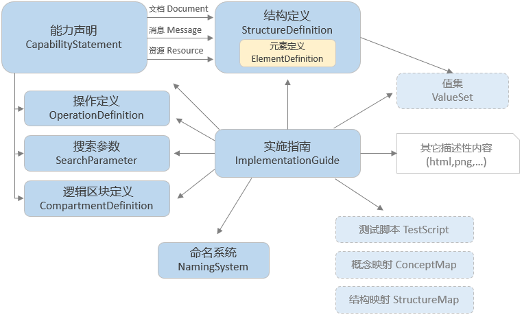

当前位置： 符合性
当前位置： 符合性
当前位置： 符合性工作组: FHIR Infrastructure  | 标准状态: Informative |
符合性组件用于表示FHIR规范中数据类型、资源和API功能的元数据，并且可以通过继承原规范来创建扩展规范。
FHIR核心规范描述了在多种不同卫生健康场景使用的一系列资源、框架和API。然而，贯穿于整个卫生健康生态系统中的实践、需求、法规、教育以及可行性、效益等在不同的国家和地区都存在很大差异。
由此看来，FHIR规范是一个“平台规范”——它创建了一个通用平台或基础框架，并在该平台框架上实现了各种不同的解决方案。 因此，为了适应特定的使用场景境，通常需要对本规范作进一步适应性配置。
通常，这些配置将指定：:
请注意，由于卫生健康生态系统的特性，从不同角度来配置符合性可能存在多个重叠的配置集合：卫生健康领域、国家、机构、实施厂商。
FHIR提供了一组资源，以计算机能理解的方式来表示和共享上述适应性配置。 这些资源统称为符合性资源。尽管这些符合性资源可以单独使用，但用于实施指南或能力声明的上下文中更为常见：
The content of an Implementation Guide is described using the ImplementationGuide resource, while the capability statement is represented by the CapabilityStatement resource. These two resources make use of the complete set of conformance resources to fully capture the set of adaptations they represent. Note that the CapabilityStatement resource is one of the conformance resources, the first just describing the capabilities of a system, while the latter is the set of all conformance resources, including:
Conformance resources may be used independently, not just within the context of an ImplementationGuide resource or capability statement. See the section Common use cases for examples of such uses.
The conformance resources and their relationships are shown below:

虚线框中的资源将在本规范的其它章节介绍：
值集、概念映射 和 结构映射图
属于术语组件,
测试脚本 属于
实施支持组件.
The conformance resources do not represent patient-related data, and as such are less susceptible to data breaching. Some caution is required however:
StructureDefinitions may contain invariants formulated as structured
expressions that are evaluated by external engines (i.e. xpath), which -if improperly
sandboxed- could provide low-level access to the systemConformance resources are commonly used as part of an Implementation Guide or CapabilityStatement resource. There are many ways to use the resources independently however, including:
StructureDefinitions to
claim conformance to the rules laid out in those StructureDefinitionsCapabilityStatement resources, effectively functioning
as a discovery endpoint for services within an organizationStructureDefinitions and
OperationDefinitions to generate code that represents the structures as
classes and operations as remotely callable functions to provide an easier programming
model to a software developer. NamingSystem resources, so vendors and
implementers can quickly look up the URLs or oids for a given terminology or identifier
system.A subset of the conformance resources has been tested and used in production tooling and are now normative. These include StructureDefinition and ValueSet. Others, like CapabilityStatement, have been used widely, but not across all elements. As a consequence, these resource have a considerable number of elements marked for "trial use", while other parts are normative and will no longer change in a substantive way.
Other resources are still under development:
ImplementationGuide: used in the HL7 production tooling but has not received much use
outside of these tools yet.CompartmentDefinition: was new in STU3, and as such has not undergone much production
useThese resources have been mainly used in the tools used to build the FHIR publication, early-adopter implementation guides and the FHIR Foundation conformance resource registry. In future, we expect to see more widespread use of these resources in validation tooling, code-generators and more extensive model-based guide authoring tools.